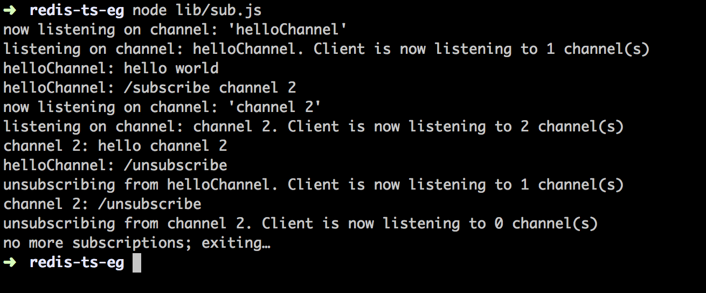
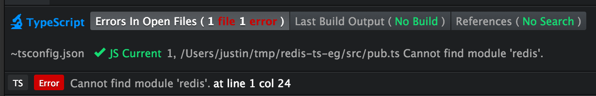

Trying out Typescript
Intro
The intention was to write some demo code to see what problems I come across while just starting to use Typescript, and to document the “work-arounds” along the way. This is a suitable read for anyone who knows what Typescript is, is interested in it, but hasn’t really used it before. You should have Redis installed (as well as Node and Typescript) to follow along.
I’m using the Atom text editor with the atom-typescript package.
A repo for the code in this post is up on Github. Use npm install && typings install to get started.
The demo
We’re going to have 2 scripts to run, pub.js and sub.js. pub.js will just start up a Node REPL exposing a redisClient which we can use to publish messages on channels with. sub.js will be subscribing to channels and listening to messages published by pub.js.
Below is a quick session for illustration:

Simple, but making the compiler happy took a bit of fiddling.
pub.ts
tsconfig.json
1 | $ mkdir redis-ts-eg && cd redis-ts-eg |
If you now open redis-ts-eg in Atom and create pub.ts (note the ts extension) in src, you should get the following error (and suggestion):
We’re missing a tsconfig.json file and we can get atom-typescript to create one for us using the Atom command-palette by hitting cmd-shift-p (OSX) or ctrl-shift-p (Linux/Windows).
Once you have that open, start typing “create tsconfig.json” and you should get the option to select. This creates the file in src, so just move it one directory up to the project root.
So what is tsconfig.json anyway?
A unified project format for TypeScript… The TypeScript compiler (1.5 and above) only cares about compilerOptions and files
Ok, so compilerOptions and files are passed to the Typescript compiler, but this isn’t to say that tsconfig.json is an atom-typescript only thing:
Using tsconfig.json:When input files are specified on the command line, tsconfig.json files are ignored.
- By invoking tsc with no input files, in which case the compiler searches for the tsconfig.json file starting in the current directory and continuing up the parent directory chain.
- By invoking tsc with no input files and a –project (or just -p) command line option that specifies the path of a directory containing a tsconfig.json file.
i.e. both Typescript and atom-typescript use the file (the teams behind each collaborate to avoid conflicts).
In tsconfig.json, filesGlob is a field used by atom-typescript to keep files up to date. i.e. any files matched by filesGlob are automatically (and individually) listed by Atom in files (which is used by tsc, the Typescript compiler).
1 | "filesGlob": [ |
typings
Great, so I guess we’re ready to start coding now:
1 | import redis = require('redis'); |

Not so fast. We’re importing redis (Typescript style) but the compiler knows nothing about it. To fix this we’ll use typings, the Typescript Definition Manager, to fetch a description of what the redis module is (i.e. a .d.ts file).
1 | redis-ts-eg$ # Install Typings CLI utility if you don't already have it |
You can tell typings to install from one of these sources (assuming a type definition is available at a given source - something you can confirm through searching as done above). npm is the default (configurable through defaultSource in .typingsrc).
1 | redis-ts-eg$ typings install redis --save |
After installing, you should get a typings.json file and a typings directory. If you save tsconfig.json now, it should update files to:
1 | "files": [ |
It would work just as well without typings/modules/redis/index.d.ts as typings/index.d.ts references it. In any case, the “Cannot find module ‘redis’” error should be gone now (try closing and re-opening the file if not).
Before continuing, notice that the compiler generates src/pub.js (even when we had an error - Typescript will still transpile to Javascript even with errors). To move the compiler’s output to lib we can add the following to compilerOptions in tsconfig.json:
1 | "compilerOptions": { |
Saving pub.ts now should generate pub.js in lib.
We can move on by importing the next module we’ll need and going through a similar process as with the redis module:
1 | import repl = require('repl'); |
repl is a module that comes with the Node distribution, but tsc has no knowledge of it.
1 | redis-ts-eg$ typings search node |
After searching, you’ll see we get two options from the list above, one with a source of dt, and one with a source of env. I’ve tried installing both and they’re identical in their repl definitions so we’ll just pick one:
1 | redis-ts-eg$ typings install dt~node --save --global |
From what I can tell, we need to use --global with this one because of the contents of the definitions in its .d.ts (i.e. typings/globals/node/index.d.ts). Unlike the redis one, not everything in this .d.ts file is wrapped around a module declaration which exports the desired definitions. Instead, there are global definitions like these:
1 | declare var process: NodeJS.Process; |
This is as opposed to contained (wrapped in a module) type definitions like the ones for redis which are scoped to a variable after importing the redis module.
Apparently, typings can make this distinction because it will fail to install dt~node without the --global flag.
In any case, the compiler now knows about repl so we can finish off pub.ts:
1 | import redis = require('redis'); |
Which gives us our next challenge:

Adding context
The following is what the compiler knows about the repl module from typings/globals/node/index.d.ts (which should be automatically added to your tsconfig.json thanks to atom-typescript):
1 | declare module "repl" { |
No mention of context anywhere. The easiest thing to do would be to add it right there. But what are we going to do in the next project which needs the same thing? Repeat the operation? Not fun.
At this point you could start managing your own index.d.ts for Node. Maybe submit a pull request with your changes and hope they get added. By managing your own type definitions in a repo you manage, you can import them into your code and re-use them.
However, for a throw-away project like this, I’d rather not have to stay doing this. Instead, I’ll just add a typingslocal directory to this project and add type definitions extending existing ones there.
Note: the name is important if you want to keep atom-typesript‘s auto management of the files field in tsconfig.json. We want definition files under typingslocal to be listed below those in typings. That should be the case with typingslocal (it is for me), but if for some reason this ordering changes with whatever version of atom-typescript you’re using, it’s best to set rewriteTsconfig to off (in tsconfig.json) and manage files yourself. That way you can make sure that d.ts files in typingslocal are listed after the ones in typings in tsconfig.json‘s files field.
It seems to me that all we need to do in this case is define our own type extending EventEmitter, giving it a context and using that type for the return value of start:
1 | // typingslocal/global/node/index.d.ts |
After saving tsconfig.json, files should refresh and the error in pub.ts should go away.
sub.ts
Moving on to sub.ts - if you copy-paste the following, you’ll find that the compiler is only unaware of the startsWith method on strings:
1 | import redis = require('redis'); |

Clearly, we need to teach the compiler about startsWith (Node, which is what we’ll be running on, has this method already defined on the String prototype… we just need to make the compiler happy).
I came across a way to do this here. It is based on “global augmentation”:
TypeScript also has the notion of global augmentations of the formdeclare global { }. This allows modules to augment global types such asArrayif necessary.
An example of augmenting Array is given in the 1.8 release notes:
1 | // Ensure this is treated as a module. |
Following this pattern, we can fix our issue with:
1 | // typingslocal/globals/runtime/index.d.ts |
Note: if the use of an empty export to ensure the file is treated as a module doesn’t make sense to you, read this.
You should now have no compiler errors and be able to run the 2 scripts as shown in the demo at the start of this post.
Conclusion
This post was meant as a “how-to” for people (and by someone) just getting started with Typescript. We’ve seen a lot of friction from the compiler and zero opportunities for it to help us (using JS would have been much easier for this demo). This can be expected to change as we start defining our own types and our code base gets larger :)